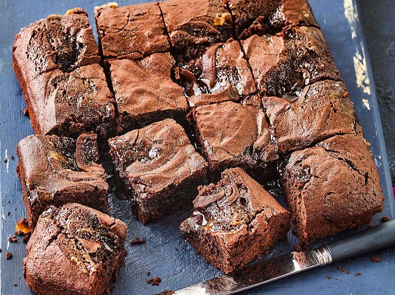

A chocolate brownie, or simply a brownie, is a chocolate baked confection. Brownies come in a variety of forms and may be either fudgy or cakey, depending on their density. Brownies often, but not always, have a glossy "skin" on their upper crust. They may also include nuts, frosting, cream cheese, chocolate chips, or other ingredients. A variation made with brown sugar and vanilla rather than chocolate in the batter is called a blond brownie or blondie. The brownie was developed in the United States at the end of the 19th century and popularized there during the first half of the 20th century.
Brownies are typically eaten by hand, often accompanied by a glass of milk, served warm with ice cream (a la mode), topped with whipped cream, or sprinkled with powdered sugar and fudge. In North America, they are common homemade treats and they are also popular in restaurants, ice cream parlors and coffeehouses.
Back to Home